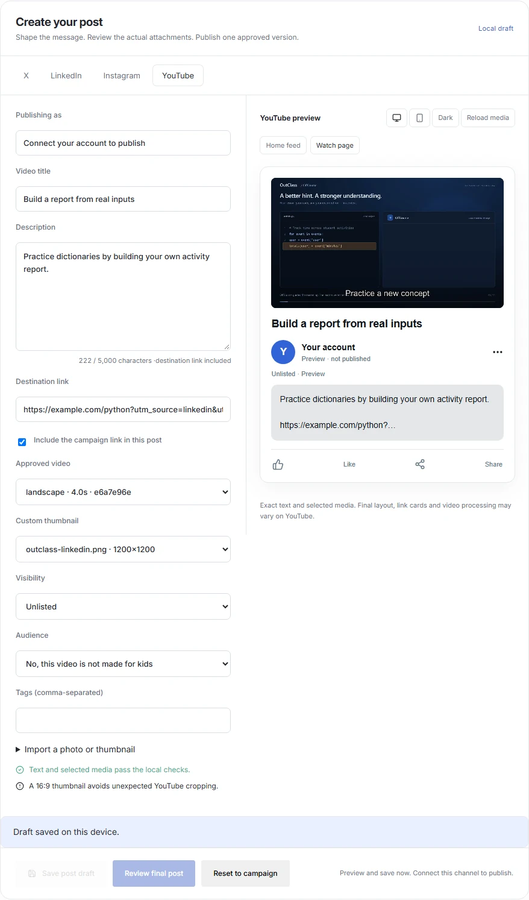

Position
An explicit audience, goal and campaign hypothesis.
OutClass Educator / GTM
Adapt your posts for each channel and review what goes out.

Pair approved copy with a campaign, define your goal and proposed budget, and prepare a tagged link for a reviewed launch. Keep unsupported metrics out of your decisions.
An explicit audience, goal and campaign hypothesis.
HTTPS destinations, UTM parameters and the exact approved creative hash.
A measurement checklist. No invented traffic, revenue or attribution.
Create the promotion. Connect the evidence.
Create channel-specific posts, graphics and real video previews directly in GTM. Connect an eligible account, review the content, and schedule automatic submission while OutClass is running. A separate Analytics specialist uses timestamped provider observations and dated reports. Acceptance, confirmed publication, and financial evidence remain distinct. Calculate CTR, CPC, CPM and gross ROAS without filling missing figures with zero. Manual reports remain unverified; payment reconciliation and advertising ingestion are not connected yet.
Read the implementation direction ↗Create the course. Prove the learning. Tell the story. Grow with evidence.